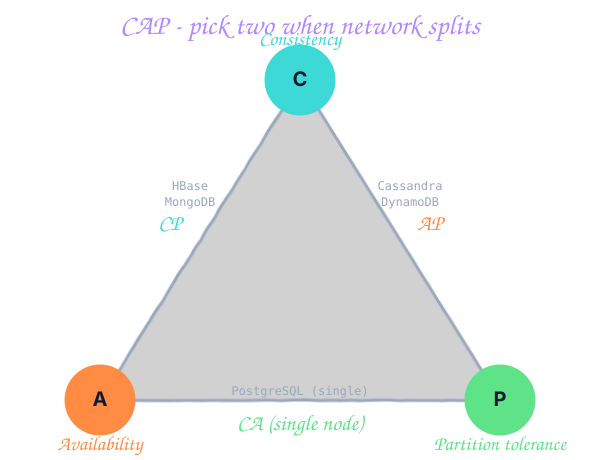
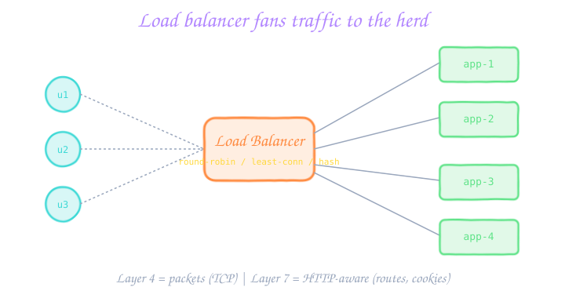
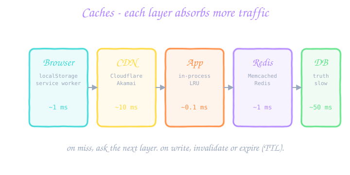
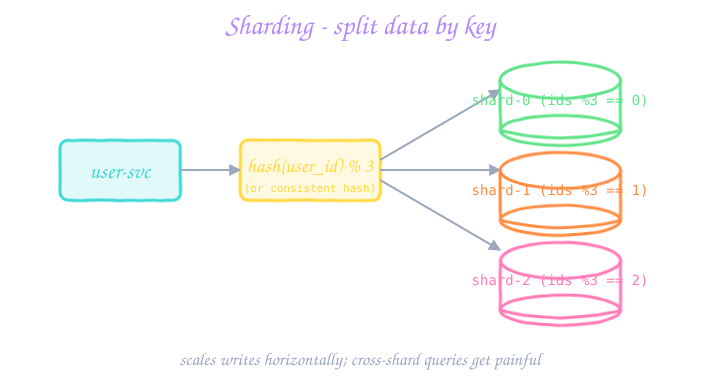
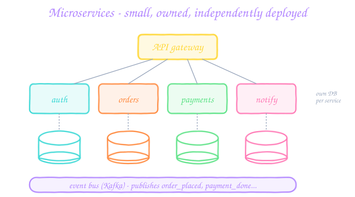
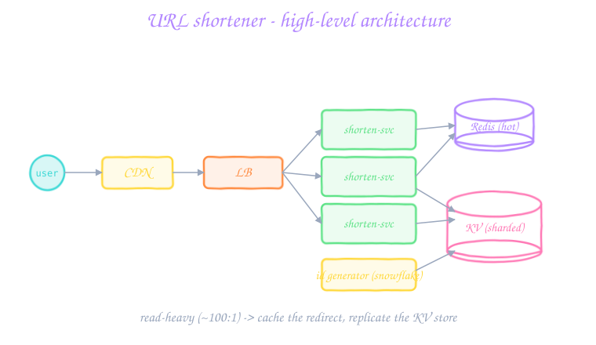

01 OOP foundations Encapsulation, inheritance, polymorphism, abstraction — in one tiny example each. ▾
1. Encapsulation - hide state, expose behaviour
Fields are private. The outside world calls methods. The class is free to change how it stores things without breaking callers.
class BankAccount {
double balance_; // hidden
public:
void deposit(double amt) {
if (amt <= 0) throw runtime_error("bad");
balance_ += amt;
}
double balance() const { return balance_; }
};public class BankAccount {
private double balance; // hidden
public void deposit(double amt) {
if (amt <= 0) throw new IllegalArgumentException("bad");
balance += amt;
}
public double getBalance() { return balance; }
}class BankAccount:
def __init__(self):
self._balance = 0 # _ = "hands off"
def deposit(self, amt):
if amt <= 0:
raise ValueError("bad")
self._balance += amt
@property
def balance(self):
return self._balance2. Inheritance - share, don't duplicate
A subclass gets the parent's fields and methods. Good for "is-a" relationships (a SavingsAccount is a BankAccount). Prefer composition ("has-a") if the relationship is fuzzy.
3. Polymorphism - one call, many forms
Same method name behaves differently depending on the actual runtime type. Lets your code work with abstractions instead of concrete classes.
struct Shape { virtual double area() const = 0; };
struct Circle : Shape { double r; double area() const { return 3.14159 * r * r; } };
struct Square : Shape { double s; double area() const { return s * s; } };
double totalArea(vector<Shape*>& shapes) {
double t = 0;
for (auto* s : shapes) t += s->area(); // works for any Shape
return t;
}abstract class Shape { abstract double area(); }
class Circle extends Shape { double r; double area() { return Math.PI * r * r; } }
class Square extends Shape { double s; double area() { return s * s; } }
double totalArea(List<Shape> shapes) {
double t = 0;
for (Shape s : shapes) t += s.area();
return t;
}class Shape:
def area(self): raise NotImplementedError
class Circle(Shape):
def __init__(self, r): self.r = r
def area(self): return 3.14159 * self.r * self.r
class Square(Shape):
def __init__(self, s): self.s = s
def area(self): return self.s * self.s
def total_area(shapes):
return sum(s.area() for s in shapes)4. Abstraction - program to interfaces, not implementations
Define what something does, defer how. List is an interface; ArrayList, LinkedList are implementations. Callers depend on List — you can swap the implementation without breaking them.
God class, stop and decompose.02 SOLID principles Five rules that turn fragile code into flexible code. ▾
S - Single Responsibility Principle
"A class should have one reason to change." A User class that holds data, saves to DB, and sends emails has three reasons to change — split it.
Bad
class User {
save() {...}
sendWelcomeEmail() {...}
formatForCsv() {...}
}Good
class User { /* data only */ }
class UserRepository { save(u) {...} }
class WelcomeMailer { send(u) {...} }
class UserCsv { format(u) {...} }O - Open/Closed
"Open for extension, closed for modification." Adding a new payment method shouldn't require editing the PaymentProcessor. Use polymorphism (Strategy pattern).
Bad
switch(method) {
case CARD: chargeCard(); break;
case UPI: chargeUpi(); break;
// adding PayPal? edit here, retest everything
}Good
interface PaymentMethod { void charge(Order o); }
class Card implements PaymentMethod {...}
class Upi implements PaymentMethod {...}
// add PayPal class without touching old codeL - Liskov Substitution
A subclass should be usable wherever its parent is — without surprises. The classic violation: Square extends Rectangle and overrides setWidth to also change height. Now any code expecting a Rectangle behaves wrong with a Square.
I - Interface Segregation
"Many small interfaces beat one giant one." A printer-scanner shouldn't force a plain printer to implement scan(). Split into Printer and Scanner, and let the multi-function device implement both.
D - Dependency Inversion
"Depend on abstractions, not concrete classes." High-level OrderService should depend on a PaymentGateway interface, not on StripeClient. Inject the concrete implementation at construction time. Now testing with a fake gateway is trivial.
class PaymentGateway { public: virtual bool charge(double) = 0; };
class OrderService {
PaymentGateway& gw; // injected
public:
OrderService(PaymentGateway& g) : gw(g) {}
bool place(double amt) { return gw.charge(amt); }
};interface PaymentGateway { boolean charge(double amt); }
class OrderService {
private final PaymentGateway gw; // injected
OrderService(PaymentGateway gw) { this.gw = gw; }
boolean place(double amt) { return gw.charge(amt); }
}from typing import Protocol
class PaymentGateway(Protocol):
def charge(self, amt: float) -> bool: ...
class OrderService:
def __init__(self, gw: PaymentGateway):
self.gw = gw
def place(self, amt):
return self.gw.charge(amt)switch grow every release? (OCP)" The right principle usually pops out.03 Design patterns interviewers love Singleton, Factory, Builder, Observer, Strategy, Decorator, Adapter. ▾
Singleton - exactly one instance
Use for shared config, loggers, connection pools. Make the constructor private; expose a static getInstance(). Beware: untestable, hides dependencies, hard to scale to multi-threaded.
class Logger {
Logger() {}
public:
static Logger& instance() { // Meyers' singleton, thread-safe since C++11
static Logger inst;
return inst;
}
void log(const string& s) { /* ... */ }
};public class Logger {
private static volatile Logger INSTANCE;
private Logger() {}
public static Logger getInstance() {
if (INSTANCE == null) {
synchronized (Logger.class) {
if (INSTANCE == null) INSTANCE = new Logger();
}
}
return INSTANCE;
}
}class Logger:
_inst = None
def __new__(cls):
if cls._inst is None:
cls._inst = super().__new__(cls)
return cls._instFactory - create without naming the class
Callers ask the factory for "a parser for JSON"; factory returns the right concrete type. Adding a new format = one new class + one line in the factory.
Builder - fluent construction of complex objects
When a constructor would take 10 parameters, replace it with a builder. new Pizza.Builder().crust(THIN).cheese().pepperoni().build().
Observer - publish/subscribe
Subject keeps a list of observers; on state change, notifies them all. Backbone of UI event handlers, Kafka consumers, the Redux store.
class Observer { public: virtual void on(const string& ev) = 0; };
class Subject {
vector<Observer*> subs;
public:
void subscribe(Observer* o) { subs.push_back(o); }
void publish(const string& ev) { for (auto* o : subs) o->on(ev); }
};interface Observer { void on(String ev); }
class Subject {
private final List<Observer> subs = new ArrayList<>();
void subscribe(Observer o) { subs.add(o); }
void publish(String ev) { for (Observer o : subs) o.on(ev); }
}class Subject:
def __init__(self):
self.subs = []
def subscribe(self, fn):
self.subs.append(fn)
def publish(self, ev):
for fn in self.subs:
fn(ev)Strategy - swap the algorithm at runtime
Sort with comparator, payment with PaymentMethod, compression with Compressor. Strategy is OCP in code form.
Decorator - wrap to add behaviour
Coffee → MilkDecorator(Coffee) → SugarDecorator(MilkDecorator(Coffee)). Each wrapper adds price/description without modifying the original.
Adapter - bridge incompatible interfaces
Your app expects a Logger.log(s); the third-party library exposes RemoteLogger.send(msg, level). An adapter class translates the call.
04 LLD walkthroughs Parking Lot, Splitwise, BookMyShow — the classics, fully sketched. ▾
Approach for any LLD problem (5 steps)
- Clarify scope. What's in / what's out? E.g. "Is payment in scope, or only ticket issuance?"
- List entities (nouns). ParkingLot, Spot, Vehicle, Ticket, Payment.
- Define relationships. A ParkingLot has many Spots. A Ticket belongs to one Vehicle.
- Methods on each.
ParkingLot.park(vehicle) -> Ticket,ParkingLot.leave(ticket) -> Receipt. - Discuss concurrency & extensions. Two cars enter at the same time. Multi-floor lots. EV-only spots.
Walkthrough 1 - Parking Lot
Clarify: "Multi-level? Vehicle types? Pricing model? Reservation?". Assume: multi-floor, 3 vehicle types (bike/car/truck), pay-on-exit.
Classes
VehicleTypeenum: BIKE, CAR, TRUCK.Vehicle(plate, type).Spot(id, type, isFree).Floor(number, spots,findFreeSpot(type)).ParkingLot(floors,park(),leave(), registry of active tickets).Ticket(id, vehicle, spot, entryTime).PricingStrategyinterface:HourlyPricing,FlatPricing(Strategy pattern).Paymentwith state machine: PENDING → PAID / FAILED.
Concurrency: two cars contend for the same spot. Make findFreeSpot + reserve atomic (lock the floor, or use a BlockingQueue of free spots per type).
Extension scenario: "Now we support EV charging spots." Add EvSpot extends Spot + a new VehicleType.EV. findFreeSpot(EV) can fall back to a regular CAR spot if no EV spot is free — document the policy.
Walkthrough 2 - Splitwise (expense splitter)
Clarify: "Group expenses? Equal split / percentage / exact / shares? Settlement suggestions?"
Classes
User(id, name, email).Group(members, expenses).Expense(paidBy, totalAmount, splits, splitType).Splitabstract:EqualSplit,PercentageSplit,ExactSplit(Strategy).BalanceSheet:Map<User, Map<User, Double>>= "owes how much to whom".SettlementService.minimiseTransactions(group): turn the balance graph into the fewest transfers (greedy + max-heap of creditors/debtors).
Concurrency: two members add expenses to the same group simultaneously → serialise updates to the BalanceSheet (lock per group).
Walkthrough 3 - BookMyShow (movie ticket)
Clarify: "Single city / multi-city? Concurrent seat selection? Refunds?"
Classes
City,Theatre,Screen,Show(movie, screen, startTime, seatLayout).Seat(row, col, type: REGULAR / RECLINER / GOLD).Booking(user, show, seats, status: HOLD / CONFIRMED / CANCELLED, expiresAt).SeatHoldwith TTL (e.g. 5 minutes) so abandoned carts release seats.Payment+BookingService.confirm(holdId, paymentToken).
The hard part — two users tap the same seat at the same time. Wrap seat selection in a transaction: UPDATE seats SET held_by = ?, expires = ? WHERE show_id = ? AND seat_id IN (...) AND held_by IS NULL. If 0 rows updated → someone else got it; show the user the new seat map.
BookMyShow with 200 methods is a red flag. Decompose: CatalogService, SeatService, BookingService, PaymentService, NotificationService.05 Scalability vocabulary The 10 words you must use correctly in HLD rounds. ▾
| Term | Meaning in one line | Example number |
|---|---|---|
| Latency | Time for one request to finish. | 50 ms p50, 200 ms p99 |
| Throughput / QPS | Requests served per second. | 10k QPS |
| Vertical scaling | Bigger box: more CPU / RAM / disk. | 2x cores |
| Horizontal scaling | More boxes behind a load balancer. | 3 → 30 nodes |
| Availability | Fraction of time the system answers correctly. | 99.99% = 52 min/year down |
| Durability | Probability data survives. | S3 = 11 nines |
| SLA | Contractual promise to customer (legally binding). | "99.9% uptime or refund" |
| SLO | Internal target you measure against. | "p99 latency < 300 ms" |
| SLI | The actual metric you're measuring. | "% of requests under 300 ms" |
| Idempotent | Calling N times = calling once. | HTTP PUT, DELETE |
Vertical vs horizontal — when to choose what
Vertical scaling
+ Zero code change.
+ Best for state-heavy single nodes (a primary DB).
- Hard cap (you run out of biggest box).
- Single point of failure.
Horizontal scaling
+ Near-infinite ceiling.
+ Fault tolerant: lose 1 of 50 = ok.
- Needs stateless services (or sharding).
- Coordination + distributed-systems pain.
06 CAP theorem & consistency The triangle you can never fully escape. ▾

Consistency models (from strong to loose)
- Strong / linearizable. Every read sees the latest write. Slow, expensive, but easy to reason about (single MySQL primary).
- Read-your-writes. After you write, you see it; others may lag. Sticky sessions, or read from primary for your user.
- Monotonic reads. Once you've seen version N, you never see version < N again.
- Eventual. All replicas converge "eventually". Cheap, fast, but reads can return stale data (DynamoDB by default, Cassandra).
- Causal. Operations that depend on each other are seen in order; unrelated ops can reorder.
How to talk about it in an interview
Don't say "CAP theorem!" abstractly. Say: "For a banking system, I'd pick CP — we can't show a stale balance. For a social feed, AP is fine — a 5-second-stale like count won't ruin anyone's day."
07 Load balancing Spreading traffic without losing your mind. ▾

L4 vs L7
L4 (transport)
Routes by IP + port, ignores payload. Fast, simple, cheap.
Tools: AWS NLB, IPVS, HAProxy in TCP mode.
L7 (application)
Reads HTTP. Can route by path, header, cookie. Can do TLS termination, retries, rate limiting.
Tools: AWS ALB, NGINX, Envoy, Istio.
Algorithms
- Round-robin. req 1 → A, req 2 → B, req 3 → C, req 4 → A. Simple but ignores load.
- Least connections. Send to the server with fewest active connections. Better for variable-length requests.
- Weighted. Bigger servers get more weight. Useful during a rolling deploy.
- IP hash. Same client always lands on the same server (cheap sticky session).
- Consistent hashing. Adding/removing a server only re-maps ~1/N of keys instead of all. Critical for cache fleets and sharded systems.
Health checks & failover
The LB pings each backend on a port/path every few seconds. If a backend fails k consecutive checks, it's removed from rotation. Re-added when healthy again. Crucial: don't share the LB itself as a single point of failure — run multiple LBs behind DNS round-robin or BGP anycast.
08 Caching layers Every cache hit is a query the DB didn't see. ▾

Five layers worth caching
- Browser.
Cache-Controlheaders, service workers, IndexedDB. - CDN. Cloudflare, Akamai, CloudFront. Caches your static assets near the user (~10 ms).
- App-level / in-process. LRU map inside the server process. Lowest latency, lost on restart.
- Distributed cache. Redis or Memcached cluster. Shared across many app instances.
- DB cache. Buffer pool, query cache. Mostly automatic but tune sizes.
Write strategies
Write-through
Write to cache and DB together. Safe, but slower writes.
Write-back
Write to cache; flush to DB later. Fast writes; risky if cache dies.
Write-around
Write straight to DB; cache fills on next read. Fine for "write once, read rarely".
Eviction policies
- LRU (least recently used) — default in Redis (with
allkeys-lru). Works well for general traffic. - LFU (least frequently used) — resists "one-hit wonders" like a viral tweet polluting the cache.
- TTL — expire after N seconds. Simple, predictable staleness.
Cache invalidation - "two hard problems"
- Write-through updates the cache on every write → never stale, slower writes.
- Cache-aside + TTL. Read populates cache; writes only invalidate (or delete) the key. The TTL caps how stale a missed invalidation can stay.
- Pub/sub invalidation. Writer publishes a "user-123 changed" event; all app servers listen and drop the entry.
09 Databases: SQL, NoSQL, sharding Choose the storage that matches the question. ▾
SQL vs NoSQL at a glance
| Dimension | SQL (Postgres, MySQL) | NoSQL |
|---|---|---|
| Schema | Strict, enforced | Flexible / schema-less |
| Joins | First-class | Usually denormalised, joins in app |
| Consistency | ACID (strong) | BASE (eventual) by default |
| Scale | Mostly vertical + read replicas | Horizontal-first, sharded |
| Best for | Orders, payments, anything with FKs | Feeds, logs, key-value, time series |
NoSQL flavours (pick by access pattern)
- Key-value (Redis, DynamoDB) — "given a key, get a value". Sessions, caches, profiles.
- Document (MongoDB, Couchbase) — JSON-ish docs with nested fields and partial indexes.
- Wide-column (Cassandra, HBase, ScyllaDB) — tunable consistency, write-heavy, time-series.
- Graph (Neo4j, Amazon Neptune) — relationship-heavy queries (friend-of-friend).
- Search (Elasticsearch, OpenSearch) — full-text and faceted search.
Indexing 101
A B-tree index turns "search column X" from O(n) into O(log n). Trade-off: each insert/update/delete must also update every index → slower writes. Rules of thumb:
- Index the columns you query in
WHERE,JOIN,ORDER BY. - Composite index
(a, b)works for queries onaalone and(a, b), but not onbalone. - Never over-index a write-heavy table. Measure with
EXPLAIN.
Replication
Leader-follower (primary-replica): writes go to leader; reads can hit followers (slight lag). Standard MySQL/Postgres setup.
Multi-leader: writes on any node; conflict resolution needed.
Leaderless (Cassandra): every node accepts writes; quorum reads/writes for consistency.
Sharding (horizontal partitioning)

- Hash sharding.
shard = hash(user_id) % N. Even distribution; ranged queries cost a fan-out. - Range sharding. Users A-F → shard 0, G-M → shard 1. Range queries fast, but hot keys cause hotspots.
- Geo sharding. By region. Useful for latency & data-locality laws (GDPR).
- Consistent hashing. Add a shard → only ~1/N of keys move (vs ~all with mod N).
10 Message queues & events Decouple producers and consumers; smooth out spikes. ▾
Three use cases
- Async work. User uploads a video; web server returns 202, video service processes it later from a queue.
- Spike absorption. Flash sale: 100k orders/sec into the queue, 1k orders/sec processed downstream — queue stretches.
- Decoupling. Order service publishes
OrderPlaced; mail, analytics, fraud services each subscribe.
Kafka vs RabbitMQ vs SQS
| Tool | Model | Strength | Use when… |
|---|---|---|---|
| Kafka | Log (replayable) | High throughput, retention | event sourcing, analytics, audit |
| RabbitMQ | Queue + exchanges | Flexible routing, low latency | RPC-like task queues |
| SQS | Managed queue | Zero ops | You're on AWS and want simple |
| Redis Streams | Lightweight log | If Redis is already there | Small-scale events |
Delivery guarantees (memorise!)
- At-most-once — might lose messages, never duplicate. Fire-and-forget metrics.
- At-least-once — never lose, may duplicate. The default in practice; consumers must be idempotent.
- Exactly-once — the dream. Kafka offers it for the Kafka-to-Kafka path with transactions; end-to-end exactly-once across services is essentially impossible without idempotency keys.
Dead-letter queues (DLQ)
After N failed retries, the message goes to a DLQ instead of looping forever. Engineers triage the DLQ. Never auto-drop — you'll lose evidence of bugs.
11 Microservices & API gateway When to split the monolith — and when not to. ▾

Monolith vs Microservices
Monolith wins when
- Small team (< 20 devs).
- Domain is still being discovered.
- You need cross-table transactions a lot.
- You want simple deploys.
Microservices win when
- Teams need to deploy independently.
- Different services have wildly different scale or tech.
- Blast radius of a bad deploy must be small.
- Org chart maps to service boundaries (Conway's law).
The supporting cast
- API gateway — one front door. Authn/authz, rate limiting, routing, request shaping.
- Service discovery — how does
ordersfindpayments? DNS (Kubernetes service), Consul, Eureka. - Circuit breaker — if downstream fails fast for 50% of requests, stop calling it for 30s. Prevents cascading failure (Hystrix, resilience4j).
- Distributed tracing — OpenTelemetry, Jaeger. One request ID flows through every service so you can see the waterfall.
- Saga pattern — replaces cross-service transactions: each step has a compensating action ("if payment fails, cancel the order").
12 Rate limiting & auth Keep bad actors out, keep good ones inside the budget. ▾
Rate-limiting algorithms
- Fixed window. "100 req per minute starting on the minute". Simple but allows 2x burst at the boundary.
- Sliding window log. Store every request timestamp; count those within the window. Accurate, expensive memory.
- Sliding window counter. Approximate by combining current + previous window. Cheap and accurate enough.
- Token bucket. Bucket of size B; refilled at rate R per second. Request takes 1 token, drops if empty. Allows controlled bursts.
- Leaky bucket. Token bucket's cousin; smooths burst into steady drain.
Token bucket sketch
struct TokenBucket {
double tokens, capacity, refillPerSec;
double lastFill;
bool allow() {
double now = nowSeconds();
tokens = min(capacity, tokens + (now - lastFill) * refillPerSec);
lastFill = now;
if (tokens >= 1) { tokens -= 1; return true; }
return false;
}
};class TokenBucket {
double tokens, capacity, refillPerSec, lastFill;
synchronized boolean allow() {
double now = System.nanoTime() / 1e9;
tokens = Math.min(capacity, tokens + (now - lastFill) * refillPerSec);
lastFill = now;
if (tokens >= 1) { tokens -= 1; return true; }
return false;
}
}import time
class TokenBucket:
def __init__(self, capacity, refill_per_sec):
self.capacity = capacity
self.refill = refill_per_sec
self.tokens = capacity
self.last = time.monotonic()
def allow(self):
now = time.monotonic()
self.tokens = min(self.capacity, self.tokens + (now - self.last) * self.refill)
self.last = now
if self.tokens >= 1:
self.tokens -= 1
return True
return FalseAuth choices
- Session cookies. Server stores the session; client holds a cookie. Easy to invalidate, secure-by-default with HttpOnly + SameSite.
- JWT (JSON Web Token). Signed payload; server doesn't need to look it up. Great for stateless APIs. Hard to revoke before expiry — keep TTL short (15 min) + refresh tokens.
- OAuth 2.0. "Login with Google" flow. Authorisation server returns an access token your app uses to call user-owned APIs.
13 HLD walkthroughs URL shortener, chat, news feed — full designs in interview style. ▾
Universal HLD framework
- Clarify scope & SLAs. "Do we need analytics? Custom aliases? What's expected p99 latency?"
- Back-of-envelope estimation. Users, QPS, storage, bandwidth.
- Data model. Core entities + access patterns.
- High-level diagram. Client → LB → service → cache → DB → queue. Draw on whiteboard.
- Deep-dive. Pick the spiciest component (hashing scheme, sharding key, feed ranking) and go deeper.
- Bottlenecks & trade-offs. What breaks at 10x? Consistency choices. SPOFs.
Walkthrough A - URL shortener (bit.ly)
Clarify: "Custom aliases? Expiry? Analytics? How long are URLs (read-heavy clearly)?"
Estimate (assume):
- Writes: 100M/month = ~40 writes/sec.
- Read:write = 100:1 → 4k reads/sec, 100k peak.
- Storage: ~500 bytes/record × 100M/month × 5 years ≈ 3 TB.
Data model: (short_key PRIMARY, long_url, owner, created_at, expires_at).
Diagram:

Short-key generation:
- Hash & truncate (MD5(long_url)[:7] in base62). Collisions possible → rehash with salt.
- Counter / Snowflake. Central ID generator gives a monotonically-increasing 64-bit ID; encode to base62. Collision-free; predictable URLs (bad for security — mitigate by shuffling).
- Pre-generated pool. Background job creates batches of unused keys; service grabs one per request. Decouples write path from key generation.
Bottlenecks: hot reads → CDN + Redis. Sharded KV store keyed by short_key. Analytics? Drop click events into Kafka → ClickHouse for queries.
Walkthrough B - Chat (WhatsApp-lite)
Clarify: "1-1 only or groups? Message delivery semantics? Online status?"
Estimate: 500M users, 50 msgs/user/day → ~290k msg/sec; storage ~500 GB/day if 200 B per msg + metadata.
Components:
- Edge layer: WebSocket gateway (~1M connections per box, sticky LB on hash(user_id)).
- Presence service: Redis with user-online TTL; heartbeats every 30s.
- Message service: writes to Cassandra keyed by (conversation_id, msg_id ascending). Range-scan efficient for "load last 50 msgs".
- Pub/sub: Kafka topic per shard; gateways subscribe and push to connected clients.
- Offline delivery: Push via FCM/APNs when user not connected.
Hardest part - delivery guarantees. WebSocket can drop. Use a per-message ID; client ACKs on receipt; server keeps unacked for < N seconds; resend on reconnect. End-to-end encryption (E2EE) means server never sees plaintext — complicates search, simplifies privacy.
Walkthrough C - News feed (Instagram-lite)
Clarify: "Chronological or ranked? Followers can be in millions (celebrities)?"
The fundamental choice - fan-out:
Fan-out on write (push)
When user A posts, copy the post-id into the feed cache of every follower.
+ Read is O(1) — just read your feed key.
- Celebrity with 100M followers = 100M writes per post.
Fan-out on read (pull)
At read time, merge recent posts from everyone the user follows.
+ Cheap write.
- Read is O(followees), heavy for power users.
The hybrid (Instagram, Twitter): push for normal users, pull for celebrities at read time, merge the two lists. Best of both worlds.
Ranking: off-line model scores (user_id, post_id) -> affinity; the feed service pulls top-N candidate posts and re-ranks on read.
Storage: Posts in a sharded blob/KV store (user_id partition). Media in object store (S3) + CDN. Feeds in Redis sorted-set keyed by user_id, score=timestamp or rank.